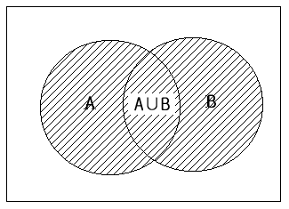
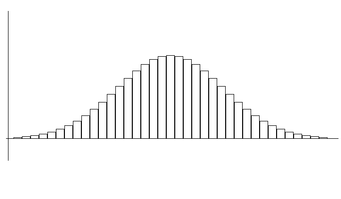
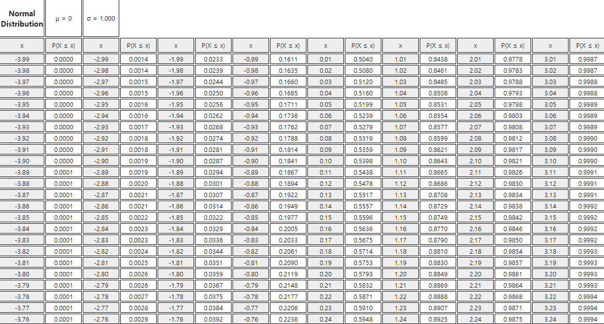
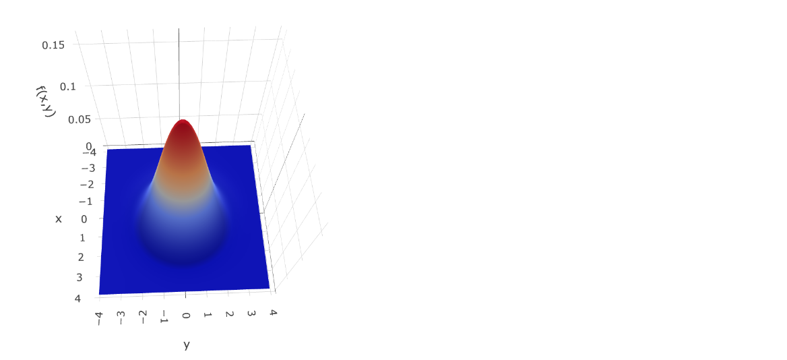
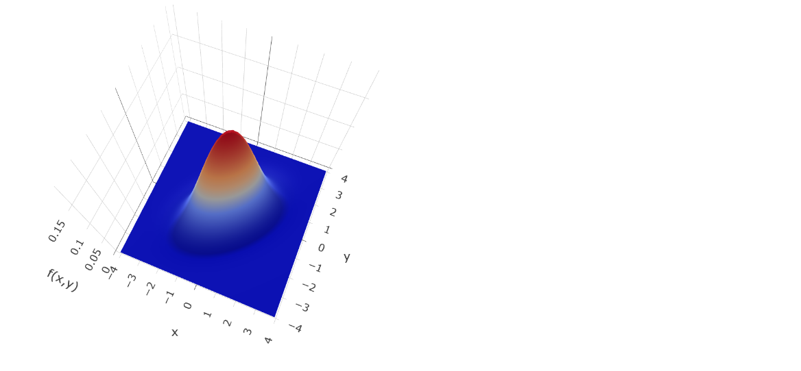
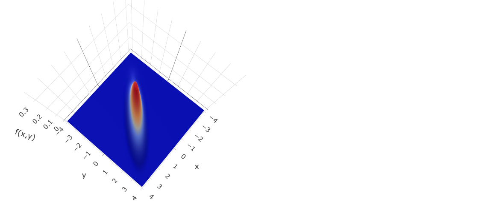

• A definition of probability and several rules for calculating the probability are in section 4.1.
• A definition of random variable and distribution is provided in section 4.2, and
the most frequently used distributions, such as binomial and normal distribution, are introduced.
• Bivariate distribution, Bayes theorem, and multivariate distribution are discussed in section 4.3.
• Sampling distributions, which are fundamental for the inferential statistics, are described in section 4.4.
Applications of the sampling distribution to estimate population parameters are also discussed.
Similar events occur repeatedly or are carried out in our everyday life. Let us consider the following examples.
- A machine repeatedly produces products at a production plant. The product can be either a normal one or a defective one, but it is not known beforehand.
- I have ordered pizza at home every Sunday. It usually takes 30 minutes for a pizza to be delivered to the house, but the exact time is unknown.
These examples have common characteristics as follows.
- There is repetition of similar events, such as the production of products or pizza deliveries.
- We know all possible outcomes of events, such as whether the product will be defective or normal and whether the pizza delivery time will be 10 minutes, 20 minutes, 30 minutes, and so on.
- But we do not know which outcome exactly will happen.
Events with these three characteristics are subject to study and to apply statistics.
An experiment in which a particular outcome occurs among known possible outcomes is called a statistical experiment.
In a statistical experiment, the resulting outcome is uncertain and is determined by chance. For example, if you throw a coin,
the possible outcomes are either the head or tail, but the resulting outcome will come out by chance, so tossing a coin
is a statistical experiment. If a production plant produces products at one machine and their possible outcomes
are either defective or normal, then producing a product is a statistical experiment. Also, a pizza delivery time
to your home, which takes between 20 and 60 minutes, is a statistical experiment.
In a statistical experiment, the set of all possible outcomes is referred to as a sample space,
and a subset of this sample space is referred to as an event. The sample space is usually denoted by S, and events of the sample space are denoted by English capital letters as A, B, and C ...
In the example above, a machine produces a product, the sample space is S = {normal, defective} and a subset of the sample space such as A = {defective} is an event.
As such, when the number of elements in a sample space is either finite or countably infinite, it is called a discrete sample space.
In a statistical experiment of the pizza delivery time to home, the sample space is all possible time between 20 minutes and 60 minutes, i.e. S = { (20,60) }.
Delivery time between 20 and 30 minutes ({20,30}) is an event. As such, when the number of elements in a sample space is uncountably infinite, it is called a continuous sample space.
A concept of probability is used to indicate the possibility of an event occurring in a statistical experiment.
The probability represents the likelihood of an event occurring using a number between 0 and 1.
If an event is likely to occur, the probability is expressed as a number close to 1. The probability is expressed as a number close to zero if it is unlikely. Specifically, there are several ways to define the probability of an event using a number between zero and one. We introduce two definitions of the probability, one is a classical definition and the other is a relative definition of the probability.
Assuming all elements in the sample space are likely to occur equally. The classical definition of probability that an event A
will occur, denoted as P(A), in case of the discrete sample space is defined as follows:
$$ \small
P(A) = \frac {\text {Number of elements belonging to an event A}} {\text {Total number of elements in sample space}}
$$
The probability that an event A will occur in case of the continuous sample space is defined as follows.
$$ \small
P(A) = \frac {\text {Measurement of elements belonging to an event A}} {\text {Measurement of the total elements of a sample space} }
$$
The measurement can be the length, area, and volume, etc.
Example 4.1.1
An office worker went on a business trip to a city, and two restaurants (restaurants A and B) were near his lodging.
He hesitated about which restaurant to go to and threw a die to count the number of points that appeared on the top.
If he had odd numbers, he would go to Restaurant A; if he had even numbers, he would go to Restaurant B.
What is the probability that he would pick Restaurant A?
Answer
The sample space in this statistical experiment, which counts the number of points on the top by throwing a dice, is {1, 2, 3, 4, 5, 6}, and the number of odd events is {1, 3, 5}, so there are three elements. Therefore, the probability that restaurant A will be selected is 3/6 = 1/2.
Example 4.1.2
When I ordered a pizza from home every Sunday, the time it takes for a pizza to be delivered to my home
has the same possibility for any time from 10 to 30 minutes (you may have a decimal number).
What is the probability that a pizza will be delivered between 20 and 25 minutes?
Answer
The sample space in this example is all values from 10 to 30 minutes collectively { (10,30) },
and where a pizza is delivered between 20 and 25 minutes is the event { (20,25) }. Therefore,
the probability of this event is \( \small \frac {(25-20)} { (30-10)} = 0.25 \) by measuring
the distance of the interval.
We can apply the classical definition of probability to many real problems in calculating
the probability. However, the classical definition of the probability may not be possible
to assume that all elements of the sample space are likely to occur. For example, checking the quality of
a product usually results in ‘Good' and 'Defective' and the assumption that each element of the sample space
{'Good’, 'Defective'} is likely to occur equally. The relative frequency definition of the probability
is defined as the rate at which event A occurs when many statistical experiments are conducted
under the same condition repeatedly and denoted by P(A).
[Statistical Probability]
A simulation of a coin toss experiment using 『eStatU』 shows that the relative frequency
of ‘Head’ occurrence converges to the probability of one-half. This convergence of the probability
is called the law of large numbers.
4.1.1 Calculation rules of probability and conditional probability
There are several calculation rules for calculating complex probabilities. Consider the examples
below to explain the rules.
Example 4.1.3
Out of 40 sophomores in the Statistics Department this semester, 25 students are taking Economics,
30 are taking Political Science, and 20 are taking both courses. When I meet one of the sophomores,
what is the probability of this student taking either Economics or Political Science (one or both)?
Answer
Since 25 students took Economics and 20 students are taking both courses, 25 - 20 = 5 students take only Economics.
Also, since 30 students are taking Political Science, 30 - 20 = 10 students take only Political Science.
Thus, as shown in <Figure 4.1.1>, the number of students taking either Economics or Political Science is 5 + 10 + 20 = 35.
Therefore, the probability of students taking either Economics or Political Science is 35 / 40.
<Figure 4.1.1> Students who take either economics or political science
Consider students taking both Economics (A) and Political Science (B). The event that a student took
both courses, denoted as A ∩ B, is called an intersection event of A and B (<Figure 4.1.2>).
<Figure 4.1.2> Intersection events A ∩ B
The event that a student takes either Economics or Political Science (one or both), denoted as A ∪ B,
is called an union event of A and B (<Figure 4.1.3>).

<Figure 4.1.3> Union Event A ∪ B
Probabilities of these events on this example are as follows:
That is, the probability of taking either Economics or Political Science, P(A ∪ B), can be calculated by adding
the probability of taking each course and subtracting the probability of taking both courses.
[Addition Rule of Probability]
The rule discussed in [Example 4.1.3] is called an addition rule of probability.
$$ P(A ∪ B) = P(A) + P(B) - P(A ∩ B) $$
If A ∩ B = ∅, then the rule becomes as follows:
$$ P(A ∪ B) = P(A) + P(B)$$
In this case, the events A and B are called mutually exclusive.
Example 4.1.4
In [Example 4.1.3], if 10 students take Economics, 20 students take Political Science, and if no student
takes both courses, what is the probability of a student taking either Economics or Political Science?
Answer
In this case, because no student takes both courses, the events in which they take Economics (A) and Political Science (B)
are mutually exclusive. Thus, the probability taking either Economics or Political Science, P(A U B), is as follows:
P(A U B) = P(A) + P(B) = 10/40 + 20/40 = 0.75
Let us consider the example below to find out the multiplication rule of probability.
Example 4.1.5
Students of ADA University come from either Baku or a province. Among the 30 sophomores in the Department of Economics,
there are 10 males and 20 females, one male and five females are from the province.
1) When selecting a student, what is the probability that the student is from the province?
2) When I selected a student, the student was female. What is the probability that this student is from the province?
3) When I selected a student, the student was from the province. What is the probability of this student being a male?
4) When selecting a student, what is the probability that the student is male and from Baku?
Answer
To solve this problem, it is convenient to organize the information given into a cross table as shown below.
Baku
Province
Total
Male
1
10
Female
5
20
Total
24
6
30
If we calculate and insert the blanks in the above table, it is as follows. Let us call the event of the male as M,
the female as F, from Baku as B, from the province as C.
Baku(B)
Province(C)
Total
Male(M)
9
1
10
Female(F)
15
5
20
Total
24
6
30
1) \(\small P(C) = \) 6/30.
2) The probability that this student is from the province among females is 5/20.
This probability is denoted as \(\small P(C∣F) \) and is called a conditional probability.
3) The probability of a male from the province is \(\small P(M∣C) = \) 1/6.
4) The probability is \(\small P(M ∩ B) \) and the cross table shows that the answer is 9/30.
Alternatively, the probability of the male among all students can be obtained as \(\small P(M) = \) (10/30)
and then multiplied by the conditional probability of being from Baku among the males, \(\small P(B∣M) \) = 9/10. Namely
In addition, the probability \( \small P(M ∩ B) \) can be obtained first by the probability of being a student from Baku,
\(\small P(B) = \) 24/30, and then multiplied by the probability of being a male from Baku (\(\small P(M∣B) = \) 9/24).
You can calculate the conditional probabilities and their graphs using 『eStatU』 as follows:
<Figure 4.1.4> Multiplication Rule of Probability
Conditional probability is generally defined as follows.
$$ \small
P(A ∣ B) = \frac {P(A ∩ B)} {P(B)} \qquad \qquad \textrm{if} \quad P(B) ≠ 0
$$
In the above example, the probability of an intersection event is expressed by multiplying the probabilities of other events
and it is called a multiplication rule of probability.
$$ \small
P(A ∩ B) = P(A) P(B∣A)
$$
If \(\small P(B∣A) = P(B) \), then the rule becomes as follows:
$$ \small
P(A ∩ B) = P(A) P(B)
$$
In this case, the events \(\small A\) and \(\small B\) are called independent events.
Example 4.1.6
The Tiger team of professional baseball has the probability of 0.7 to beat the Lion team recently.
What is the probability that Tiger will win both games in this evening’s double match? Assume that winning one game does not affect winning the next.
Answer
Let us call the event that the Tiger wins the first game is \(\small A\), and the event that the Tiger wins the second game is \(\small B\).
Since A and B are independent of each other, the probability that the Tiger will win both games is as follows.
Example 4.1.7
The following is a table of 30 second-year students by gender and region of origin. Are the events of male and Baku origin independent of each other?
Baku(B)
Province(C)
Total
Male(M)
5
5
10
Female(F)
10
10
20
Total
15
15
30
Answer
Let us call the event of male as \(\small M \), female as \(\small F\), from Baku as \(\small B\), and from the province as \(\small C \).
From the table, probabilities of \(\small P(M ∩ B) \), \(\small P(M) \) and \(\small P(B) \) are as follows:
In this case, all events of both \(\small M \) and \(\small C \) , \(\small F \) and \(\small B \) , \(\small F \) and \(\small C \) are
independent of each other. We call the two attributes, gender and region, independent of each other.
In [Example 4.1.5], gender and region are not independent.
The following is an example of how to calculate the probability of a complementary event.
Example 4.1.8
There is a box of six products, two of which are defective. What is the probability that at least one defective product will be found when three have been extracted for product testing? Assume that the product is extracted once for inspection without replacement.
Answer
The probability of finding one defective in the three product tests is as follows.
Thus, the probability that at least one defect will be found is 3/5 + 1/5 = 4/5.
Another way to calculate this probability is to obtain the probability of an event with no defect
(a complementary event) and then subtract it from 1. In other words, the probability that at least
one defective product can be calculated as follows.
The method used in the above example is called a rule of probability calculation using a
complementary event. It is often used to obtain the probability that the word 'at least' is contained.
if \(\small A^C \) denotes a complementary event of the event \(\small A \), then \(\small P(A^C ) \) can be calculated as follows.
$$ \small
P(A^C) = 1 - P(A)
$$
<Figure 4.1.5> is a picture of a complementary event.
<Figure 4.1.5> Complementary event
4.1.2 Bayes theorem
In this section, we will introduce Bayes' Theorem, which is widely used in statistics, using
the probability calculation learned in the previous section. Let's look at the example below.
Example 4.1.9 Past surveys of a country showed that 10% of the population
are hepatitis B carriers and 90% are non-hepatitis B carriers.
It means that there is a 10% chance that we will meet a person who is a hepatitis B carrier.
If we let \(\small B\) be the event of being a hepatitis \(\small B\) carrier, \(\small G\) be the event of being
a non-carrier, then \(\small P(B)\) = 0.1 and \(\small P(G)\) = 0.9. These probabilities are called
prior probabilities to identify a person whether he is a hepatitis carrier or not.
Suppose past surveys showed more information that if a person was tested for an immune response,
a positive or negative response was shown. The probability that a hepatitis B carrier person showed
a positive response to this test (called the sensitivity of the test) is 95%, and the probability
that a non-hepatitis B carrier person showed a negative response (the specificity of the test) is 97%.
This additional information about the probabilities of the immune response is called as
likelihood probabilities. Using these probabilities, we are curious to find the following
probabilities.
1) What is the probability that a person will show a positive response
when he takes an immune response test?
2) A person showed a positive response when he took an immune response test.
What is the probability that this person is a hepatitis B carrier and a non-carrier?
Answer
Let \(\small B\) be the event of being a hepatitis \(\small B\) carrier, \(\small G\) be the event of being
a non-carrier, \(\small Y\) be the event of showing a positive response, and \(\small B\) be the event of
showing a negative response. The information given in the problem is the probability of a
hepatitis B carrier \(\small P(B)\) = 0.10, the conditional probability that a hepatitis B carrier will
test positive \(\small P(Y∣B)\) = 0.95, and the conditional probability that a non-hepatitis Bcarrier
will test negative \(\small P(N∣G)\) = 0.97. Since events \(\small B\) and \(\small G\), and
events \(\small Y\) and \(\small N\) are mutually exclusive events, it is easy to see that
\(\small P(G)\) = 0.90, \(\small P(N∣B) \) = 0.05, \(\small P(Y∣G) \) = 0.03.
It is convenient to find related probabilities if we summarize the above values with a two-dimensional table
as shown below,
Positive (\(\small Y\))
Negative (\(\small N\))
Total
Likelihood probability
Carrier (\(\small B\))
\(\small P(B \cap Y)\)
\(\small P(B)\) = 0.10
\(\small P(Y|B)\) = 0.95 \(\small P(N|B)\) = 0.05
Non-carrier (\(\small G\))
\(\small P(G \cap Y)\)
\(\small P(G)\) = 0.90
\(\small P(Y|G)\) = 0.03 \(\small P(N|G)\) = 0.97
Total
\(\small P(Y)\)
\(\small P(N)\)
1.00
The probability that a person will show a positive response when he or she takes an immune response test
in the question 1) is \(\small P(Y)\) and the probability of a hepatitis B carrier person showing
a positive response, \(\small P(B \cap Y)\), and the probability of a non-hepatitis carrier person showing
a positive response \(\small P(G \cap Y)\). In other words,
$$ \small
P(Y) = \small P(B \cap Y) + P(G \cap Y)
$$
This is called a total probability that a person shows a positive response.
The joint probabilities, \(\small P(B \cap Y)\) and \(\small P(G \cap Y)\), can be obtained as follows
using the multiplication rule of probability.
$$ \small
\begin{align}
P(B \cap Y) &= P(B) P(Y|B) = 0.1 \times 0.95 = 0.095 \\
P(G \cap Y) &= P(G) P(Y|B) = 0.9 \times 0.03 = 0.027
\end{align}
$$
Therefore,
$$ \small
P(Y) = P(B \cap Y) + P(G \cap Y) = 0.095 + 0.027 = 0.122
$$
When a person shows a positive response in his immune test, the probability that this person is
a hepatitis B carrier in question 2) is the proportion of a hepatitis B carrier and a positive response
\(\small P(B \cap Y ) \) among all people who tested positive \(\small P(Y) \), which is
the conditional probabiity \(\small P(B | Y ) \). From the definition of the conditional probability,
it can be calculated as follows.
$$ \small
P(B | Y) = \frac {P(B \cap Y)} {P(Y)} = \frac {0.095}{0.122} = 0.779
$$
Since \( \small P(Y) = P(B \cap Y) + P(G \cap Y) \), the above formula can be written as follows.
$$ \small
P(B | Y) = \frac {P(B \cap Y)} {P(B \cap Y) + P(G \cap Y)}
$$
When a person shows a positive response in his immune test, the probability that this person is
a non-hepatitis B carrier can be calculated similarly as follows.
$$ \small
P(G | Y) = \frac {P(G \cap Y)} {P(Y)} = \frac {0.027}{0.122} = 0.221
$$
The probabilities \(\small P(B | Y) \) and \(\small P(G | Y) \) are called
posterior probabilities to identify a person whether a hepatitis carrier or not
using the likelihood probabilities.
When the prior probabilities are given, as in the example above, finding the posterior probabilities
using the likelihood probabilities
is called Bayes' Theorem, which is generally summarized as follows.
Bayes' Theorem
Let the events \(\small A_1 , A_2 \;, ... ,\; A_n\) be mutually exclusive and
\(\small S \;=\; A_1 ∪ A_2 \;∪ ... ∪ \;A_n\) is the sample space. If the event \(\small Y\) is \(\small P(Y) > 0 \), and
the prior probabilities of \(\small P(A_1 ), P(A_2 ), ... , P(A_n) \) and the likelihood probabilities
\(\small P(Y|A_1 ), P(Y|A_2 ), ..., P(Y|A_n ) \) are given, the posterior probability of \(\small P(A_k | Y) \) is
as follows:
$$ \small
\begin{align}
P(A_k | Y) &= \frac {P(A_k \cap Y)} {P(Y)} \\
&= \frac {P(A_k ) P(Y |A_k )} {P(A_1 ) P(Y |A_1 ) + P(A_2 ) P(Y |A_2 ) + \cdots + P(A_n ) P(Y |A_n ) }
\end{align}
$$
Example 4.1.10 Three machines (A, B, C) are used to produce a product in a factory.
Machine A produces 40% of all products, Machine B produces 50%, and Machine C produces 10%.
Defective rates of each machine are 5%, 3%, and 1%, respectively. One day, we examined a product
and found to be defective. What are the probabilities that this defective product came from Machine A,
Machine B, and Machine C, respectively.
Answer
Let Y be the event that a product is defective. The information given in the problem can be summarized
using a cross table as follows.
Good (\(\small G\))
Defective (\(\small Y\))
Total
Defective rate Likelihood probability
Machine \(\small A\)
\(\small P(A \cap Y)\)
\(\small P(A)\) = 0.40
\(\small P(Y|A)\) = 0.05 which implies \(\small P(G|A)\) = 0.95
Machine \(\small B\)
\(\small P(B \cap Y)\)
\(\small P(B)\) = 0.50
\(\small P(Y|B)\) = 0.03 which implies \(\small P(G|B)\) = 0.97
Machine \(\small C\)
\(\small P(C \cap Y)\)
\(\small P(C)\) = 0.10
\(\small P(Y|C)\) = 0.01 which implies \(\small P(G|C)\) = 0.99
Total
\(\small P(G)\)
\(\small P(Y)\)
1.00
To find the probabilitiese of the above problem, we need to find the joint probabilities
\(\small P(A \cap Y) ,\; P(B \cap Y),\; P(C \cap Y) \) in the cross table using the multiplication rule of probability
as follows.
$$ \small
\begin{align}
P(A \cap Y) &= P(A) P(Y|A) = 0.40 \times 0.05 = 0.020 \\
P(B \cap Y) &= P(B) P(Y|B) = 0.50 \times 0.03 = 0.015 \\
P(C \cap Y) &= P(C) P(Y|C) = 0.10 \times 0.01 = 0.001
\end{align}
$$
Therefore, the total probability of the event that a product is defective, \(\small P(Y) \), is as follows.
$$ \small
\begin{align}
P(Y) &= P(A \cap Y) + P(B \cap Y) + P(C \cap Y) \\
&= 0.020 + 0.015 + 0.001 = 0.036
\end{align}
$$
We can summarize this calculation in the cross table as follows.
Good (\(\small G\))
Defective (\(\small Y\))
Total
Defective rate Likelihood probability
Machine \(\small A\)
0.380
0.020
\(\small P(A)\) = 0.400
\(\small P(Y|A)\) = 0.050 which implies \(\small P(G|A)\) = 0.950
Machine \(\small B\)
0.485
0.015
\(\small P(B)\) = 0.500
\(\small P(Y|B)\) = 0.030 which implies \(\small P(G|B)\) = 0.970
Machine \(\small C\)
0.099
0.001
\(\small P(C)\) = 0.100
\(\small P(Y|C)\) = 0.010 which implies \(\small P(G|C)\) = 0.990
Total
\(\small P(G)\) = 0.964
\(\small P(Y)\) = 0.036
1.000
When a product is defective, the probability that it came from machine A is the proportion
of the probability that a defective product is from machine A out of the total probability of
all defective products, i.e., \(\small P(A|Y) \), as follows.
$$ \small
P(A | Y) = \frac {P(A \cap Y)} {P(Y)} = \frac {0.020}{0.036} = 0.555
$$
Similary, posterior probabilities \(\small P(B|Y) \) and \(\small P(C|Y) \) can be calculated as follows.
$$ \small
\begin{align}
P(B | Y) = \frac {P(B \cap Y)} {P(Y)} = \frac {0.015}{0.036} = 0.417 \\
P(C | Y) = \frac {P(C \cap Y)} {P(Y)} = \frac {0.001}{0.036} = 0.028 \\
\end{align}
$$
Many statistical analyses, such as the quality control,
decision making, and machine leearning, are performed using the Bayes' theorem.
4.2 Random variable and probability distribution
There are many similar probability calculations in statistical experiments that are frequently observed around us,
For example, the problem of tossing coins several times
to see how many times the head comes out is similar to counting how many defective products are made
from a product line. This problem is similar to counting the number of voters
supporting a particular presidential candidate. This section discusses
the probability calculations of these frequently observed examples.
Consider a statistical experiment in which a coin is thrown repeatedly two times.
If the coin is ideal, the sample space for this experiment is {'Tail-Tail', 'Tail-Head', 'Head-Tail', 'Head-Head’}.
The probability of an event in which each element of the sample space is produced is 1/4
by the classical definition. In most cases, the fact that we are interested in this example will be
counting the number of heads or tails. If \(\small X\) is defined as 'the number of heads' in this experiment,
the possible value of \(\small X\) can be 0, 1, or 2, and we are interested in calculating probabilities
that \(\small X\)=0, \(\small X\)=1 or \(\small X\)=2. As such, a function that corresponds to one real number
between [0,1] for each element of the sample space is called a random variable (see Table 4.2.1).
When possible values of a random variable are finite or countably infinite, it is called a
discrete random variable. If possible values of a random variable are uncountably infinite,
it is called a continuous random variable.
Table 4.2.1 Random variable \(\small X\) = 'Number of Heads’ when tossing a coin twice'
Sample space
\(\small X\) = 'Number of Heads’
Tail-Tail Tail-Head Head-Tail Head-Head
0 1 1 2
The probability that the random variable \(\small X\) defined as in Table 4.2.1 will be zero, denoted as
\(\small P(X=0)\), is 1/4, because it is the probability of an event {Tail-Tail}. The probability that
\(\small X\) being 1, \(\small P(X=1)\), is 2/4, because, P({Tail-Head, Head-Tail}) is 2/4. Also,
the probability that \(\small X\) being 2, \(\small P(X=2)\), is 1/4 because P({Head-Head}) is 1/4.
The probabilities for each value of the random variable \(\small X\) can be summarized as shown
in Table 4.2.2, and it is called a probability distribution function of \(\small X\) usually
denoted as f(x). <Figure 4.2.1> is a graph of f(x).
Table 4.2.2 Probability distribution function of \(\small X\) = 'Number of Heads’ when tossing a coin twice
1) Table style of the probability distribution function
2) Function of the probability distribution function
<Figure 4.2.1> Probability distribution function of the random variable \(\small X\) = 'Number of Heads’ when tossing a coin twice
The cumulative probability of \(\small P(X \le x)\) as the value of random variable \(\small X\) increases
is referred to as a cumulative distribution function and denoted as F(x).
If possible values of a discrete random variable \(\small X\) are \( x_1 , x_2 , ... , x_n \),
a mean and variance of \(\small X\) are also used as measures of the central tendency and dispersion.
The mean of \(\small X\) called an expectation of \(\small X\), denoted \(\small E(X)\) or \(\mu\),
and the variance of \(\small X\), denoted as \(\small V(X)\) or \( \sigma ^2 \), are defined as follows.
The standard deviation of \(\small X\), denoted \(\sigma \), is the square root of the variance \(\small X\).
$$
\begin{align}
E(X) &= \mu = \sum _{i=1} ^{n} x_{i} P(\textrm{X}= x_{i} ) \\
V(X) &= \sigma ^2 = \sum_{i=1} ^{n} ( x_i - \mu )^2 P(\textrm{X}= x_i ) = \sum_{i=1}^{n} x_i ^2 P(\textrm{X}= x_i ) - \mu^2
\end{align}
$$
Example 4.2.1
Find the expected value and variance of the random variable \(\small X\) = 'Number of Heads’ when tossing a coin twice'
which is described in Table 4.2.2.
When knowing the expected value \(\small E(X)\) and variance \(\small V(X)\) of a random variable \(\small X\),
it is often necessary to obtain the expected value and variance of a new random variable \(aX + b\) where \(a\) and \(b\) are constants.
The expected value and variance of \(aX + b\) are as follows:
This formula applies equally to a continuous random variable.
$$
\begin{align}
E(aX + b) &= a E(X) + b \\
V(aX + b) &= a^2 V(X)
\end{align}
$$
Example 4.2.2
The mean of midterm exam scores in a statistics course was 60 points, and the variance was 100.
The professor is considering the following alternative to adjust the scores. Find the mean and variance of each alternative.
1) Add 20 points to each student's score.
2) Each student's score is multiplied by 1.4.
3) Multiply each student's score by 1.2 and add 10 points.
Answer
The random variable \(\small X\) is the mid-term score and its mean and variance are \(\small E(X)\) = 60 and \(\small V(X)\) = 100.
1) The mean and variance of the new random variable \(\small X\) + 20 are as follows.
In other words, adding 10 points after multiplying by 1.2 increases the mean by 1.2 times and
the variance by \(\small 1.2^2\)= 1.44 times. Note that adding scores will change the mean but not the variance.
Suppose that the mean of a random variable \(\small X\) is \(\mu\) and the standard deviation σ.
Then the linear transformation
$$ Z = \frac{X-\mu}{\sigma}$$
is a new random variable with the mean of 0 and the variance of 1.
This new random variable is referred to as a standardized random variable.
4.2.1 Binomial distribution
Similar examples that examine how many times the head comes out by tossing coins
are observed around us.
- Products produced in a factory machine are inspected and classified as either defective or normal.
- In an election survey, ask voters whether they would vote for a candidate (pro) or not (con).
There are two possible outcomes {defective, normal} and {pro, con} in these examples,
and the experiment is repeated, but we do not know the outcome of each experiment. Each experiment
with two possible outcomes is specifically called a Bernoulli trial, and one outcome of interest
in the two is often referred to as 'success' and the other outcome as 'failure'. This Bernoulli trial
is usually repeated several times, and the number of successes is counted as follows:
- Throw a coin five times and examine the number of heads.
- Inspect 100 products produced in a factory and count the number of defective products.
- Count the number of voters in favor of a particular candidate for the presidential election among 50 voters.
The 'counting of successes' when performing the independently repeated Bernoulli trial with the same
probability of success is called a binary random variable, and its distribution is called a
binomial distribution. We will find the probability calculation of the binomial distribution
in the example below.
Example 4.2.3
Four more games will be played by the Tiger baseball team this season. If the Tiger team has a 60% chance of
winning every game, what is the probability of the following?
1) losing all of them?
2) winning only once?
3) winning twice?
4) winning three times?
5) winning all four times?
6) Find the probability distribution function of the random variable \(\small X\) = ‘the number of games the tiger wins’.
Answer
This problem is the enforcement of the Bernoulli trial in each game of 'win' and 'fail'. This Bernoulli trial
is repeated four times. The sample space is all about winning or losing a game, and their elements are shown below,
marking the winning in O and the losing in X.
1) The event that the Tiger loses all games is {'XXXX'}, and the probability of this event is (0.4)×(0.4)×(0.4)×(0.4) = \(\small (0.4)^4\).
2) There are four events that the Tiger wins once, and loses three times, such as {‘OXXX’, ‘XOXX’, ‘XXOX’, ‘XXXO’}.
These four cases are equal to the number of O's in a single seat when there are four seats which is \(\small{}_4C_1\).
Since the probability of each event is (0.6)×(0.4)×(0.4)×(0.4), the probability of the Tiger winning once is \(\small{}_4C_1 (0.6)(0.4)^3\).
3) There are six events that the Tiger wins two times and loses two times, such as {‘OOXX’, ‘OXOX’, ‘OXXO’, ‘XOOX’, ‘XOXO’, ‘XXOO’}.
These six cases are equal to the number of O's in two seats when there are four seats which is \(\small{}_4C_2\).
Since the probability of each event is (0.6)×(0.6)×(0.4)×(0.4), the probability of the Tiger winning twice is \(\small{}_4C_2 (0.6)^2(0.4)^2\).
4) There are four events that the Tiger wins three times and loses one time, such as {‘OOOX’, ‘OOXO’, ‘OXOO’, ‘XOOO’}.
These four cases are equal to the number of O's in three seats when there are four seats which is \(\small{}_4C_3\).
Since the probability of each event is (0.6)×(0.6)×(0.6)×(0.4), the probability of the Tiger winning three times is \(\small{}_4C_3 (0.6)^3(0.4)^1\).
5) There is one event that the Tiger wins four times such as {‘OOOO’}.
This one case is equal to the number of O's in four seats when there are four seats which is \(\small{}_4C_4\).
Since the probability of each event is (0.6)×(0.6)×(0.6)×(0.6), the probability of the Tiger winning all four times is \(\small{}_4C_4 (0.6)^4\).
6) The probability distribution function of the random variable X = ‘the number of games the Tiger wins’ is a summary of the above probabilities.
\(\small X = x \)
\(\small P(X=x) \)
0
\(\small {}_{4}C_0 (0.4)^4 = 0.0256 \)
1
\(\small {}_{4}C_1 (0.6) (0.4)^3 = 0.1536 \)
2
\(\small {}_{4}C_2 (0.6)^2 (0.4)^2 = 0.3456 \)
3
\(\small {}_{4}C_3 (0.6)^3 (0.4) = 0.3456 \)
4
\(\small {}_{4}C_4 (0.6)^4 = 0.1296 \)
Using 『eStatU』, we can easily find this example's probability and probability distribution function.
Select [Binomial Distribution] from the menu of 『eStatU』 and enter
\(\small n = 4, p = 0.6\) and press the [Execute] button to display a binomial function graph.
If you click the [Binomial Prob Table] button, a table of binomial probabilities appears.
[Binomial Distribution]
There are sliding bars of \(n\) and \(p\) and a probability calculation box under
the graph, so put the desired value and press the [Enter] key to calculate the value.
A table of binomial distributions is shown to the right of the graph. In addition to
\(\small P(X = x)\), this table shows the cumulative probabilities \(\small P(X \le x)\) and
\(\small P(X \ge x)\) to facilitate various probability calculations. If you select a new
\(n\) and \(p\) and click [Execute] button, a new binomial distribution table for this
value is added below.
In the binomial distribution function, \(n\) (number of trials) and \(p\) (success probability) are called parameters.
<Figure 4.2.2> shows a binomial distribution of different \(n\) and \(p\).
<Figure 4.2.2> Binomial distribution for various n and p
In general, if the probability of ‘success’ is \(p\) and the Bernoulli trial is repeated n times independently,
the probability of the binomial random variable \(X\) = 'the number of success is \(x\)'
is as follows:
$$
f(x) = {}_n C_x p^x (1-p)^{n-x} , \qquad x = 0,1,2, ... , n
$$
It is called a binomial distribution and denoted as \(B(n,p)\). The expectation and variance of
the binomial distribution are as follows.
$$
\begin{align}
E(X) &= np \\ V(X) &= np(1-p)
\end{align}
$$
Example 4.2.4
Experience shows that a salesperson from an insurance company has a 20% chance of insuring a customer when he meets. The salesperson is scheduled to meet 10 customers this morning. Calculate the following probabilities directly and check using 『eStatU』.
1) What is the probability that three customers will get insurance?
2) What is the probability that two or more customers will get insurance?
3) How many people, on average, would sign up? And what is its standard deviation?
Answer
This example is a Binomial distribution with \(n = 10, p = 0.2\).
1) The probability that three customers will get insurance is as follows:
Select ‘Binomial Distribution’ from the menu of 『eStatU』, enter \(n=10, p=0.2\), and click on the
[Execute] button to display a graph and Table 4.2.3.
You can see the values in the above calculations, such as \(\small P(X \ge 2)\) = 0.6242
Table 4.2.3 『eStatU』 Binomial Distribution Table when \(n = 10, p = 0.2\)
\(n = 10\)
\(p = 0.200\)
\(x\)
\(\small P(X = x)\)
\(\small P(X \le x)\)
\(\small P(X \ge x)\)
0
0.1074
0.1074
1.0000
1
0.2684
0.3758
0.8926
2
0.3020
0.6778
0.6242
3
0.2013
0.8791
0.3222
4
0.0881
0.9672
0.1209
5
0.0264
0.9936
0.0328
6
0.0055
0.9991
0.0064
7
0.0008
0.9999
0.0009
8
0.0001
1.0000
0.0001
9
0.0000
1.0000
0.0000
10
0.0000
1.0000
0.0000
Practice 4.2.1
It is said that 60% of car drivers usually use a seat belt. When you select 15 drivers randomly, find the following probabilities for the number of drivers who normally use the seat belt. Check the calculation using 『eStatU』.
1) Probability of 10 or more drivers.
2) Probability of 8 or less drivers.
3) Probability of at least 11 drivers.
4) Probability of at least 7 drivers.
Practice 4.2.2
A salesperson found that there was a 30% chance of selling a product when a customer visited.
If ten customers visit this salesman one day, calculate the following probabilities using 『eStatU』.
1) Exactly how likely is it to sell three products?
2) What is the probability of selling three or more products?
3) What is the probability of selling less than 3 products?
4) What are the odds that none of them could be sold?
5) What is the probability of selling 5 products?
4.2.2 Normal distribution
Consider a statistical experiment that measures how long an office worker can get to work from home.
Experience shows that commuting usually takes about 30 minutes to get to the workplace if the traffic is not congested.
While the result of this experiment will have a real number near 30 minutes, we can generally assume
that the sample space of commuting is greater than zero and define a random variable \(\small X\) as
the 'commuting time to the workplace.'
As such, if a random variable has an infinite number of possible values and it is uncountable, it is called a continuous random variable.
In the case of the continuous random variable, calculating probability at each value of the random variable is meaningless
because there are infinite possible values, and the probability at each value is considered zero. Instead of
calculating the probability at a single value, the probability of an interval is of interest
in the case of the continuous random variable. For example, 'What is the probability of commuting
between 25 and 35 minutes?' We can collect data and plot a histogram
as in <Figure 4.2.3> and count frequencies and probabilities to obtain this probability.

<Figure 4.2.3> Histogram with narrower intervals on many data
If you increase the number of data and close the interval's width to zero, this histogram can be
approximated to a continuous function, as shown in <Figure 4.2.4>.
This function is called a probability distribution function of the continuous random variable.
In real life, many continuous data appear a bell-shaped function, as in <Figure 4.2.4>.
The graph shows that large amounts of data are located around their mean, and fewer data are located as it moves away
from the mean and is symmetrical about the mean. This type of probability distribution is called a
normal distribution. Data obtained from measurements such as the height, weight, and
bolt's length often follow the normal distribution.
<Figure 4.2.4> Probability distribution function of a continuous random variable
If the probability distribution function of a continuous random variable can be expressed as a mathematical function
\(f(x)\), we can approximate the desired probability easily without finding the frequency table and histogram.
The probability of the random variable \(\small X\) at interval (\(a,b) \), denoted as
\(\small {P( a \lt X \lt b) }\), can be obtained as the area between
(\(a,b) \) of \(f(x)\) as <Figure 4.2.5> which is the integral over (\(a,b) \) as follows:
$$
P(a \lt X \lt b)= \int_{a} ^{b} {} f(x)dx
$$
<Figure 4.2.5> \(P(a \lt X \lt b)\) of a continuous random variable \(\small X\)
The total area under this function f(x) should be 1, because the addition of all probabilities is 1.
$$
P(-∞ \lt X \lt ∞)= \int_{-∞} ^{∞} {} f(x)dx = 1
$$
The integral at an interval (\(a,b\)) of a function \(f(x)\) is generally difficult to obtain.
For a normal distribution function, we use a table to calculate the probability or 『eStatU』 software,
which will be discussed in this section.
Many mathematicians tried to find a mathematical function to describe this bell-shaped data type
to make it easier to calculate probability.
Abraham de Moivre (1667-1754) was the first to discover the function, and then Carl Friedrich Gauss
(1777-1855) extensively applied to physics and astronomy. This function is called a
normal distribution function or a Gaussian distribution function whose
functional form is as follows.
$$
f(x) = \frac{1}{\sqrt{2 π} \, \sigma } exp \{ - \frac {(x-\mu)^2 } {2 \sigma^2} \}
$$
This distribution function has two parameters μ and σ, each representing the mean and
standard deviation of the normal distribution.
If \(X\) is a normal random variable with mean μ and variance \(\sigma^2\) ,
it is often denoted by a symbol \(X\) ～ \(N(\mu, \sigma^2)\).
The following simulation of 『eStatU』, 'Normal Comparison', shows three normal distributions with different mean
and variance such as \(N(0, 1)\), \(N(-2, 0.5^2 )\), and \(N(2, 3^2 )\). We can
observe that all of them are symmetrical about the mean. If the variance increases,
the normal distribution becomes flat, and if the variance decreases, the normal
distribution becomes sharp. This is because the total area under the normal distribution
function must be 1.
[ ]
Characteristics of the normal distribution can be summarized as following.
1) It is a continuous function in the shape of a bell.
2) It is symmetrical with respect to the mean μ. So the probability of the left and right sides of the mean is 0.5 each.
3) There are an infinite number of normal distributions according to the value of μ and σ.
4) The probability of the interval [ μ - σ , μ + σ ] is 0.68, and the probability of the interval [ μ - 2 σ , μ + 2 σ ] is 0.95,
and the probability of the interval [ μ - 3 σ , μ + 3 σ ] is 0.997.
It implies that the Normal random variable has the most of values (99.7%) around the interval of (mean) ± 3 (standard deviation) and there are a few values outside of this interval.
Probability Calculation of the Normal Distribution
The normal distribution is the most frequently used in statistical methods. If \(\small X\) is a normal random variable with mean μ and variance \(\sigma^2\) ,
it requires a probability calculation in the interval \( (a,b) \). As described earlier, the probability of \(\small X\) on the interval \( (a,b) \),
is the area of f(x) surrounding the X-axis and interval \( (a,b) \) as shown in <Figure 4.2.5>.
Mathematically, this area can be calculated using the following definite integral over \( (a,b) \), but it is impossible to calculate by hand and can only be calculated using a computer.
$$
P(a \lt X \lt b)= \int_{a} ^{b} {} \frac{1}{\sqrt{2 π} \, \sigma } exp \{ - \frac {(x-\mu)^2 } {2 \sigma^2} \}dx
$$
If \(X\) is a normal random variable with the mean μ and variance \(\sigma^2\), a standardized
normal random variable \(Z = \frac {X - \mu}{\sigma} \) follows a normal distribution with
the mean 0 and variance 1, i.e., \(Z ∼ N(0,1)\). This fact implies that,
if we can find probabilities of all types of intervals in N(0,1) distribution, then we can also
find probabilities of all types of intervals in \(N(\mu, \sigma^2 )\).
Therefore, \(N(0,1)\) is called a standard normal distribution or simply \(\small \boldsymbol Z\)
distribution.
For the standard normal distribution function, the probability \(P(Z \lt z)\) which is the area from the left end (-∞)
to the value z is calculated using a computer and summarized as in Table 4.2.4.
It is called the standard normal distribution table, and Table 4.2.4 is a part of this table obtained using 『eStatU』.
This table covers values of z between –3.99 and 3.99 by an increment of 0.01, and four decimal digits of the probability
for an interval (-∞, z) in the standard normal distribution is calculated. Calculation of the probability
using this table is usually enough approximation for practical application.
Table 4.2.4 Standard normal distribution table using 『eStatU』

In 『eStatU』, the calculation of probability \( P( a \lt X \lt b ) \) for the interval \((a , b)\) of
any normal distribution \( N(\mu,\sigma^2) \) can be calculated. Any interval in the range of
[ μ - 4σ, μ + 4σ ] can be calculated. Also, a percentile value \(x\) for
a given probability \(p\), which is \(P( X \lt x) = p\), can be easily calculated using the
following 'Normal Distribution' module.
[Normal Distribution]
The probability of \(\small P(Z \lt z)\) is near 0 if z is less than μ - 4σ and is 1 if z is greater than μ + 4σ.
Table 4.2.5 shows the percentiles of the standard normal distribution using 『eStatU』.
Table 4.2.5 Percentiles of standard normal distribution using 『eStatU』
Example 4.2.5
When \(\small Z\) is a standard normal random variable, find the following probability using the standard normal distribution table.
Then, use 『eStatU』 to confirm the probability.
1) Enter 1.96 on the second option below the graph, then click the [Execute] button. The answer is shown at the yellow box in the right-hand side
2) Enter an interval from -1.96 to 1.96 on the first option below the graph, then click the [Execute] button.
3) Enter 1.96 on the third option below the graph, then click the [Execute] button. The answer is shown at the yellow box in the right-hand side
Example 4.2.6
When \(\small Z\) is a standard normal random variable, obtain x that satisfies the following formula using
the percentile table of the standard normal distribution. Then, use 『eStatU』 to find this value x.
1) \(\small P(Z \lt x)\) = 0.90
2) \(\small P(-x \lt Z \lt x)\) = 0.99
3) \(\small P(Z \gt x)\) = 0.05
Answer
Using the percentile table of the standard normal distribution,
1) The value of x is 1.2826
2) The percentile of 0.995 is 2.575.
3) The value of x is 1.645.
Using the normal distribution module of 『eStatU』,
1) Enter \(p =\) 0.90 at the right box of the fifth option below the graph, then click the [Execute] button. It shows that the exact 90 percentile is 1.282 in the yellow box.
2) Enter \(p =\) 0.99 at the right box of the fourth option below the graph, then click the [Execute] button. You can see that the exact two-sided value is –2.576 and 2.576 in the yellow boxes .
3) Enter \(p =\) 0.05 at the right box of the sixth option below the graph, then click the [Execute] button. It shows that the right 5 percentile is 1.645 in the yellow box.
Practice 4.2.3
When \(\small Z\) is a standard normal random variable, find the following probabilities using 『eStatU』.
1) Calculate the probability that \(\small Z\) is beween 0 and 1.5.
2) Calculate the probability that \(\small Z\) is between –1.5 and 0.
3) \(\small P(Z \lt -1.5)\)
4) \(\small P(Z \gt 1.5)\)
5) \(\small P(Z \gt -1.5)\)
6) \(\small P(Z \lt 1.5)\)
7) \(\small P(-1.5 \lt Z \lt 1.5)\)
Practice 4.2.4
When Z is a standard normal random variable, find \(x\) that satisfies the following formula using 『eStatU』.
1) \(\small P(Z \lt x)\) = 0.80
2) \(\small P(-x \lt Z \lt x)\) = 0.80
3) \(\small P(Z \gt x)\) = 0.80
It is recommended that you remember the probabilities of some intervals in the standard normal distribution
which are frequently used. <Figure 4.2.6> shows percentiles that cumulated probabilities
become 95%, 97.5%, and 99.5% from the left end of the standard normal distribution.
<Figure 4.2.6> Percentile of 95%, 97.5%, and 99.5% from the left end of N(0,1)
<Figure 4.2.7> shows 95% and 99% values when two ends are excluded equally.
<Figure 4.2.7> Percentile of 95%, 97.5%, and 99.5% when two ends are excluded equally.
i.e., \(\small {P(-1.96 \lt Z \lt 1.96) }\) = 0.95, \(\small {P(-2.575 \lt Z \lt 2.575)}\) = 0.99
The probability of a general normal distribution can be obtained using the standard normal distribution table. As we studied,
if \(X\) is a normal random variable with the mean μ and variance \(\sigma^2\), \(Z = \frac{X-\mu}{\sigma}\) follows the standard normal distribution.
Therefore, the probability \( P( a \lt X \lt b ) \) of the interval \(( a, b )\) of \(\small X\) can be obtained from the standard normal distribution as follows.
$$
P( a \lt X \lt b ) = P( \frac {a - \mu}{\sigma} \lt Z \lt \frac {b - \mu}{\sigma} )
$$
Example 4.2.7
If mid-term scores \(\small (X)\) of a statistics course follow a normal distribution with the average of 70 points
and the standard deviation of 10, calculate the following probabilities. Check the calculated values using 『eStatU』.
Using 『eStatU』, to obtain a probability of the normal distribution, enter the mean as 70 and the standard deviation
as 10 at the top of the screen as <Figure 4.2.8>.
For 1), enter 94.3 at the second option below the graph and then click the [Execute] button.
<Figure 4.2.8> Probability calculation of \( N(70,10^2 )\) distribution
For 2), enter 57.7 at the third option below the graph and then click the [Execute] button.
For 3), enter the interval as (57.7, 94.3) at the first option below the graph and then click the [Execute] button.
Example 4.2.8
In [Example 4.2.7], obtain the following percentiles using the normal probability table and also using 『eStatU』.
1) What is the 95% percentile of the mid-term test scores?
2) What is the 95% percentile of two-sided type of the mid-term scores?
Answer
Using the normal probability table, percentile calculations are as follows:
1) The 95 percentile z, \(\small P(Z \lt z) = 0.95\), in the N(0,1) probability table is 1.645, so the percentile in the \(\small N(70,10^2 )\) is 70 + 1.645 × 10 = 86.45.
2) The 95 percentile z of two-sided type, \(\small P(z \lt Z \lt z) = 0.95\) , in the \(\small N(0,1)\) table, can be calculated from \(P(Z \lt z) = 0.975\) which is 1.96.
So the two-sided 95% percentile interval is [70 – 1.96 × 10, 70 + 1.96 × 10], i.e., (50.4, 89.6).
Using 『eStatU』, to obtain the probability of normal distribution , enter the mean as 70 and the standard deviation as 10 at the top of the screen as <Figure 4.2.9>.
For 1), enter 0.95 at the box of the fifth option below the graph and click the [Execute] button to display the 95 percentile as 86.449.
<Figure 4.2.9> Percentile calculation of \( N(70,10^2 )\) distribution
For 2), enter 0.95 at the box of the fourth option below the graph and click the [Execute] button to display the two-sided 95 percentile as (50.400, 89.600).
Practice 4.2.5
The time a customer waits to receive a service at a bank follows a normal distribution with an average of
5 minutes and a standard deviation of 1 minute. Calculate the following probability using 『eStatU』.
1) The probability that a customer waits between 2 and 3 minutes.
2) The probability that a customer will wait less than 1 minute.
3) The probability that a customer waits at least 7 minutes to receive a service.
Practice 4.2.6
If total scores earned by students in a Statistics course follow a normal distribution with an average of 75 points
and a standard deviation of 10, find the following scores using 『eStatU』.
1) Top 10% of the scores that will get A grade. What is the minimum score to get an A grade?
2) Top 30% to 10% of the scores will get B grade. What is the score range to get a B grade?
4.3 Multivariate distribution
4.3.1 Multivariate normal distribution
When data of two continuous variables are highly correlated, if we draw a three-dimensional histogram,
the data are concentrated around the mean, and
the shape is a bent bell to both sides. We use a model for such data with a bivariate normal distribution
If two variables \(X_1\) and \(X_2\) have means \(\mu_1\) and \(\mu_2\),
variances \(\sigma_1^2\) and \(\sigma_2^2 \) respectively, and correlation \(\rho\), the distribution function is as follows.
$$ \small
f( x_1 , x_2 ) = \frac {1}{2 \pi \sigma_1 \sigma_2 \sqrt{1- \rho^2 } } exp \left \lbrace \frac{1}{2(1-\rho^2 )} \left [ \left ( \frac{x_1 - \mu_1 }{\sigma_1 } \right )^2 -2 \rho \left ( \frac{x_1 - \mu_1}{\sigma_1} \right ) \left ( \frac{x_2 - \mu_2}{\sigma_2 } \right ) + \left ( \frac{x_2 - \mu_2}{\sigma_2 } \right )^2 \right ] \right \rbrace
$$
Several snapshots of the bivariate normal with means (0, 0) and variances (1, 1) for different
correlations are as follows.
<Figure 4.3.1> shows the case where the bivariate normal distribution with mean (0, 0),
variance (1, 1) and \(\rho\) = 0. This special case is called the circular normal distribution.
Here, we have a perfectly symmetric bell-shaped curve in three dimensions.

<Figure 4.3.1> Bivariate normal distribution with mean (0, 0), variance (1, 1) and \(\rho\) = 0
As ρ increases, the bell-shaped curve becomes flattened on the 45-degree line. So for \(\rho\) = 0.5, <Figure 4.3.2>,
the curve extends towards minus 4 and plus 4 and becomes flattened in the perpendicular direction.

<Figure 4.3.2> Bivariate normal distribution with mean (0, 0), variance (1, 1) and \(\rho\) = 0.5
If \(\rho\) is increased to 0.9, <Figure 4.3.3>, the curve becomes broader, and the 45-degree line and even flatter
in the perpendicular direction.

<Figure 4.3.3> Bivariate normal distribution with mean (0, 0), variance (1, 1) and \(\rho\) = 0.9
If there are \(m\) random variables such as
\(\boldsymbol X = ( X_1 , X_2 , ... , X_m ) \) whose mean is \(\boldsymbol \mu \) and
\(m \times m\) covariance matrix is \(\boldsymbol \Sigma \), the multivariate normal distribution function
for the random variable \(\boldsymbol X \) is as follows.
$$
f( {\boldsymbol x } ) = \frac {1}{(2 \pi )^{\frac{m}{2}} {| \boldsymbol \Sigma | }^{\frac{1}{2}} } exp \{ -\frac{1}{2} \boldsymbol { (x - \mu )' \Sigma ^{-1} ( x - \mu ) } \}
$$
This function is an extension of the univariate normal distribution to \(m\) dimension and is denoted as
\( N( {\boldsymbol \mu }, {\boldsymbol \Sigma } ) \), which is used frequently in machine learning techniques.
4.4 Estimation of a distribution
Suppose sample data \( {\boldsymbol x}_1 , {\boldsymbol x}_2 , ... , {\boldsymbol x}_n \) are collected
independently from the population which follow a distribution function \(f({\boldsymbol x})\) with parameter
\(\boldsymbol \theta\), denoted as \(f({\boldsymbol x} : \boldsymbol \theta )\).
Maximum likelihood estimation (MLE) method is widely used to estimate the unknown population distribution,
The MLE estimates the parameters of the unknown distribution function using sample data.
Let the sample data \( {\boldsymbol x}_1 , {\boldsymbol x}_2 , ... , {\boldsymbol x}_n \) be the observed values
of random variables \( {\boldsymbol X}_1 , {\boldsymbol X}_2 , ... , {\boldsymbol X}_n \) and assume
that these random variables are independent and follow the same probability distribution
\(f({\boldsymbol x} : \boldsymbol \theta )\) where
\(\boldsymbol \theta = ( {\theta}_1 , {\theta}_2 , ... , {\theta}_k ) \).
In this case, the probability that the sample data
\( {\boldsymbol x}_1 , {\boldsymbol x}_2 , ... , {\boldsymbol x}_n \) will appear can be written as follows.
$$
f( {\boldsymbol x}_1 , {\boldsymbol x}_2 , ... , {\boldsymbol x}_n : \boldsymbol \theta ) = f( {\boldsymbol x}_1 : \boldsymbol \theta ) f( {\boldsymbol x}_2 : \boldsymbol \theta ) \cdots f( {\boldsymbol x}_n : \boldsymbol \theta )
$$
It is called a likelihood function, which depends on the parameter \(\boldsymbol \theta \).
The MLE method is to estimate the population distribution function by finding the parameter \(\boldsymbol \theta\)
which maximizes the likelihood function. The maximum value of the likelihood function can be found by
differentiating \(f({\boldsymbol x} : \boldsymbol \theta )\) with respect to \(\boldsymbol \theta \),
and set to \(\boldsymbol 0\), and then solve the simultaneous equations as follows;
$$
\frac { \partial f( {\boldsymbol x}_1 , {\boldsymbol x}_2 , ... , {\boldsymbol x}_n : \boldsymbol \theta ) } {\partial \boldsymbol \theta } = \boldsymbol 0
$$
If the distribution function is easy to differentiate when taking the logarithm, differentiate the
log likelihood function and set it to \(\boldsymbol 0\) to solve the system of equations.
When the maximum value of the likelihood function is \( \hat {\boldsymbol \theta} \), the estimated
distribution function is \(f( {\boldsymbol x} : \hat {\boldsymbol \theta} ) \).
If univariate sample data \( {x}_1 , {x}_2 , ... , {x}_n \) follow a normal distribution \(N(\mu , \sigma^2 )\),
the estimated parameters for \(\mu\) and \(\sigma^2\) using the maximum likelihood method can be shown as follows.
$$
\begin{align}
\hat \mu &= \frac{1}{n} \sum_{i=1}^{n} x_i \\
\hat \sigma^2 &= \frac{1}{n} \sum_{i=1}^{n} (x_i - \overline x )^2
\end{align}
$$
When multivariate sample data \( {\boldsymbol x}_1 , {\boldsymbol x}_2 , ... , {\boldsymbol x}_n \)
follow a multivariate normal distribution \(N(\boldsymbol \mu , \boldsymbol \Sigma )\),
the estimated parameters \(\boldsymbol \mu\) and \(\boldsymbol \Sigma\) using the maximum likelihood method
can be shown as follows.
$$
\begin{align}
\hat {\boldsymbol \mu } &= \frac{1}{n} \sum_{i=1}^{n} {\boldsymbol x}_i \\
\hat {\boldsymbol \Sigma} &= \frac{n-1}{n} \boldsymbol S
\end{align}
$$
where \(\boldsymbol S\) is the sample covariance matrix.
4.5 Exercise
4.1 Two executive positions in a company are vacant. Seven men and three women are fully qualified and equally eligible. The company decided to pick two of these ten people at random. Find the following odds.
1) The probability that a woman will be selected for both seats.
2) The probability that at least one of the two seats will be selected by a woman.
3) The probability that neither of the two seats will be selected by a woman.
4.2 300 households live in a neighborhood. One hundred are said to be out of the house in the evening.
Of the remaining households, 50 do not respond to telephone surveys. When a person randomly selects a household
in the neighborhood and conducts a telephone survey, ask for the following odds.
1) Probability that no one will be present when an investigator calls a house.
2) When an investigator calls a house, there is someone, but there is a chance that they will not respond to the investigation.
3) Probability of responding to a telephone survey.
4.3 A department store surveyed 80 customers about their purchasing habits and asked,
'How many times did you buy at this department store last month?' The answer to the question is as follows.
\(\small X\)(Number of purchases)
0
1
2
3
4
5
6
7
Number of customers
15
27
14
12
6
4
1
1
1) If \(\small X\) = 'Number of purchases', draw the probability distribution function of \(\small X\).
2) Draw the cumulative distribution function of \(\small X\).
3) When selecting one of the customers, obtain the following probability.
① Probability that a person who purchased more than once will be selected.
② Probability that a person who has never purchased will be selected.
③ Probability that a person who has purchased more than 4 times will be selected.
④ Probability that a person who purchased less than 3 will be selected.
4) Find the expectation and variance of \(\small X\).
4.4 In a factory, four machines (A, B, C, and D) are used to produce products.
Machine A produces 30% of all products, machine B produces 30%, machine C produces 20%, and machine D produces 20%.
The defective rates for each machine are 5%, 3%, 1%, and 1%, respectively. One day, one of the products produced was
found to be defective. Find the probability that this product came from machine A, B, C, and D.
4.5 If a random variable \(\small X\) follows a binomial distribution with \(n = 6, p = 0.2\), find the following probabilities using 『eStatU』.
1) \(\small P(X \gt 2)\)
2) \(\small P(X \le 4)\)
3) \(\small P(2 \le X \le 4)\)
4.6 Over the years, a salesperson found that there was a 50% chance of selling the product
when a customer visited. If five customers visit this salesman one day, calculate the following odds.
Check the calculation using 『eStatU』.
1) Exactly how likely is it to sell three products?
2) What is the probability of selling three or more products?
3) What is the probability of selling less than 3 products?
4) What is the probability that none of products could be sold?
5) What is the probability of selling 5 products?
4.7 It is said that 72% of drivers usually use a seat belt. When you select randomly 15 drivers,
calculate the following probabilities of drivers who use a seat belt and check the calculation using 『eStatU』.
1) Probability of 10 or more drivers.
2) 8 or less probability drivers.
3) Probability of at least 11 drivers.
4) Probability of at least 7 drivers.
4.8 If \(\small Z\) is the standard normal random variable, obtain the following and check the calculation using 『eStatU』.
1) Calculate an area between \(\small Z\) = 0 and \(\small Z\) = 1.54.
2) Calculate the probability that \(\small Z\) is between -2.07 and 2.33.
3) \(\small P(Z \ge 0.65 )\)
4) \(\small P(Z \ge -0.65 )\)
5) \(\small P(Z \lt -2.33 )\)
6) \(\small P(Z \lt 2.33 )\)
7) \(\small P(-1.96 \le Z \le 1.96)\)
8) \(\small P(-2.58 \le Z \le 2.58)\)
9) \(\small P(-3.10 \le Z \le1.25)\)
10) \(\small P(1.47 \le Z \le 3.44)\)
4.9 It is said that the weight of a melon follows a normal distribution with an average of 250g
and standard deviation of 12g. Find the probability that the weight of the melon is less than 260 grams.
Check the calculation using 『eStatU』.
4.10 4.10 A bank employee found that a customer's waiting time to receive a service follows
a normal distribution with an average of 3 minutes and a standard deviation of 1 minute.
Calculate the following probabilities and check the calculation using 『eStatU』.
1) Probability that a customer will wait between 2 and 3 minutes.
2) Probability that a customer will wait less than 1 minute.
3) Probability that a customer will wait at least 5 minutes.
4.11 It takes an average of 10 minutes for a production worker to finish a job at a factory,
and the time follows a normal distribution with a standard deviation of 3 minutes. Calculate the following
probabilities and check the calculation using 『eStatU』.
1) Probability of workers completing the work in 4 minutes.
2) Probability of workers completing the work at least 5 minutes.
3) Probability of workers completing the work within 3 minutes.